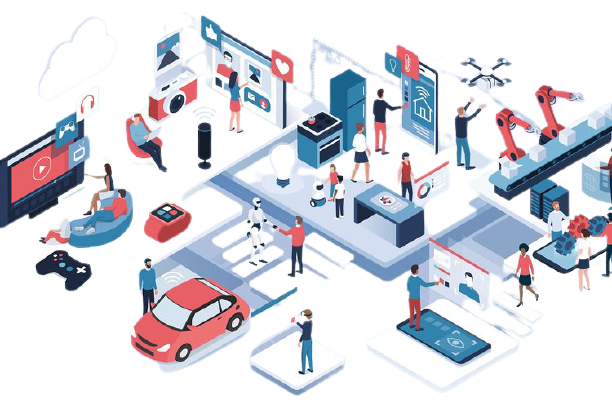

A. Mengidentifikasi Pengaruh Kemajuan Iptek terhadap NKRI
Pada abad ke-20, rekayasa teknologi yang dikembangkan oleh manusia terus mengalami kemajuan bahkan menuju kesempurnaan. Pada abad ini ditemukan beberapa alat yang sangat menunjang pada perkembangan dan kemajuan ilmu pengetahuan, seperti munculnya televisi, komputer, telepon dan sebagainya. Selain itu, perkembangan teknologi transportasi juga semakin menunjukkan bahwa dunia ini tanpa batas. Alat-alat transportasi seperti mobil, kapal laut dan pesawat udara seakan-akan membuat jarak antardaerah bahkan antarnegara sekalipun semakin pendek dan bisa ditempuh hanya dengan hitungan jam paling lama hitungan hari. Hal tersebut menunjukkan bahwa kemajuan iptek sedang dinikmati oleh seluruh masyarakat dunia, termasuk masyarakat Indonesia.

Sumber: https://www.yuksinau.id/
Kemajuan iptek tentunya memberikan pengaruh bagi kehidupan sebuah bangsa, baik itu pengaruh positif maupun negatif. Berikut ini dipaparkan pengaruh positif dan negatif dari kemajuan iptek dalam berbagai aspek kehidupan.
1. Pengaruh Positif Kemajuan Iptek bagi Kehidupan Bermasyarakat, Berbangsa dan Bernegara
-
Aspek Politik
Tidak dapat pungkiri bahwa kemajuan iptek telah berhasil menanamkan nilai-nilai dalam kehidupan politik bangsa Indonesia yang selama ini dianggap tabu. Kemajuan iptek, menjadikan nilai-nilai seperti keterbukaan, kebebasan dan demokrasi berpengaruh kuat terhadap pikiran maupun kemauan bangsa Indonesia. Dengan adanya keterbukaan, dimungkinkan akan dapat mencegah praktik korupsi, kolusi, dan nepotisme sehingga dapat dicapai pemerintahan yang bersih dan berwibawa.
Sumber: https://www.kompas.com
Dengan adanya pemerintahan yang demokratis, sangat dimungkinkan akan meningkatnya kualitas dan kuantitas partisipasi politik rakyat dalam penentuan kebijakan publik oleh pemerintah. Sementara itu dengan adanya kebebasan dalam arti kebebasan yang bertanggung jawab, maka setiap orang dapat meningkatkan kualitas dirinya dengan kreativitas dalam kehidupannya tentu saja dalam hal-hal positif. Dengan dilaksanakannya nilai-nilai tersebut, akan menjadi alat kontrol yang efektif dan efi sien terhadap keberlangsungan suatu pemerintahan, sehingga pada akhirnya akan tercipta pemerintahan yang bersih, jujur, adil, dan aspiratif.
Pada saat ini, di Indonesia makin banyak lahir partai politik, lembaga swadaya masyarakat dan organisasi lainnya. Hal tersebut berpengaruh pada perwujudan supremasi hukum, jaminan hak asasi manusia, demokratisasi, perlindungan lingkungan dan sebagainya.
-
Aspek Ekonomi
Pengaruh positif iptek bagi kehidupan ekonomi yang dapat kita ambil di antaranya:
- Makin meningkatnya investasi asing atau penanaman modal asing di negara kita.
- Makin terbukanya pasar internasional bagi hasil produksi dalam negeri
- Mendorong para pengusaha untuk meningkatkan efi siensi dan menghilangkan biaya tinggi
- Meningkatkan kesempatan kerja dan devisa negara.
- Meningkatkan kemakmuran masyarakat.
- Menyediakan dana tambahan untuk pembangunan ekonomi.
-
Aspek Sosial Budaya
Kemajuan teknologi dan informasi yang ditandai dengan munculnya internet dan makin canggihnya alat-alat komunikasi secara langsung telah mempermudah kita untuk memperoleh informasi dari belahan bumi lainnya, sehingga kita secara tidak langsung telah melakukan proses tranformasi ilmu yang sangat bermanfaat bagi kita. Selain itu juga, dengan adanya informasi tersebut kita bisa mencontoh atau belajar banyak dari tata nilai sosial budaya, cara hidup, pola berpikir yang baik, maupun ilmu pengetahuan dan teknologi dari bangsa lain yang telah maju untuk kemajuan dan kesejahteraan kita. Misalnya kita bisa mencontoh etos kerja dan semangat kerja keras yang ditampilkan oleh orang lain untuk kita terapkan dalam kehidupan kita.

Sumber: https://www.yuksinau.id/
-
Aspek Hukum, Pertahanan, dan Keamanan
Pengaruh positif iptek dalam bidang hukum, pertahanan, dan keamanan yang dapat kita ambil di antaranya:
- Makin menguatnya supremasi hukum, demokratisasi dan tuntutan terhadap dilaksanakannya hak asasi manusia.
- Menguatnya regulasi hukum dan pembuatan peraturan perundangundangan yang memihak dan bermanfaat untuk kepentingan rakyat banyak.
- Makin menguatnya tuntutan terhadap tugas-tugas penegak hukum (polisi, jaksa dan hakim) yang lebih profesional, transparan, dan dapat dipertanggungjawabkan.
- Menguatnya supremasi sipil dengan mendudukan tentara dan polisi sebatas penjaga keamanan, kedaulatan, dan ketertiban negara